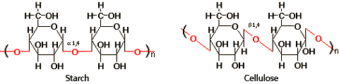
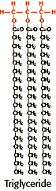
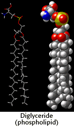
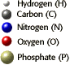
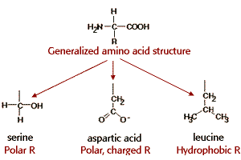
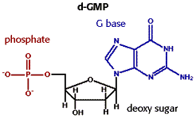

Large Molecules Problem Set
Problem 2: Identification of biological molecules
Tutorial to help answer the question
The structure on the left is a(n) _________________, and the structure on the right is a(n)_________________.

Tutorial
There are four major classes of small biological molecules found in cells. These are carbohydrates, lipids, amino acids, nucleotides. The different classes of compounds can be identified by their characteristic structural features.
Carbohydrates
- Carbohydrates can be either a single sugar (monosaccharide) like glucose, a disaccharide like sucrose, or a series of monosaccharides linked together by glycosidic bonds.
- Common monosaccharides in cells have 4, 5, or 6 carbon atoms, and multiple, polar -OH groups.
- In common sugars, the ratio of C, H, and O is 1:2:1.
- Common 5 and 6 carbons sugars usually exist as 5- or 6-membered ring structures in cells, with one oxygen atom in the ring.
- The abundance of -OH groups, the 1:2:1 ration of C:H:O, and the ring structure with an O atom in the ring are key features to use in identifying carbohydrates.
Lipids
  
Amino Acids
- Lipids or fats are characterized by their insolubility in water and solubility in organic solvents or detergents.
- Lipids are the most efficient energy storage molecules in cells.
- Most of the structure of lipids is very non-polar, formed almost exclusively of carbon and hydrogen atoms.
- Triglycerides, used for energy storage in adipose (fat) tissue, are composed of a glycerol molecule condensed with three fatty acids. Fatty acids have long, hydrophobic tails consisting mostly of repeats of -CH2- groups.
- Diglycerides, which occur in cell membranes, are composed of a glycerol, usually two long fatty acid chains, and a more hydrophilic "head" group.
- The presence of long, hydrophobic fatty acid chains is a key feature to use in identifying many important lipids.
Nucleotides
- Amino acids are the building blocks of proteins.
- As shown in the diagram, amino acids have a generalized structure, including an amino group, carboxyl group, and variable side chain designated as the R-group.

- There are 20 different amino acids used to make proteins. They differ from each other in the structure and property of the R-groups, which may be polar and charged, polar and uncharged, or hydrophobic.
- To identify an amino acid, look for the generalized structural features.
|  |
- Nucleotides are the building blocks of RNA and DNA.
- They are formed from a 5-carbon sugar (ribose or deoxyribose), a phosphate group, and a nitrogenous pyrimidine or purine base. The pyrimidines are 6 membered rings with 2 nitrogen atoms in the ring. The purines are a 6 and a 5 membered ring fused together, with 4 ring nitrogen atoms.
- To identify a nucleotide, look for the sugar-phosphate portion linked to a complex ring containing nitrogen atoms in the ring.


Department of Biochemistry and Molecular Biophysics
The University of Arizona
Revised: October 2004
Contact the Development Team
http://biology.arizona.edu
All contents copyright © 1996-2003.
All rights reserved.